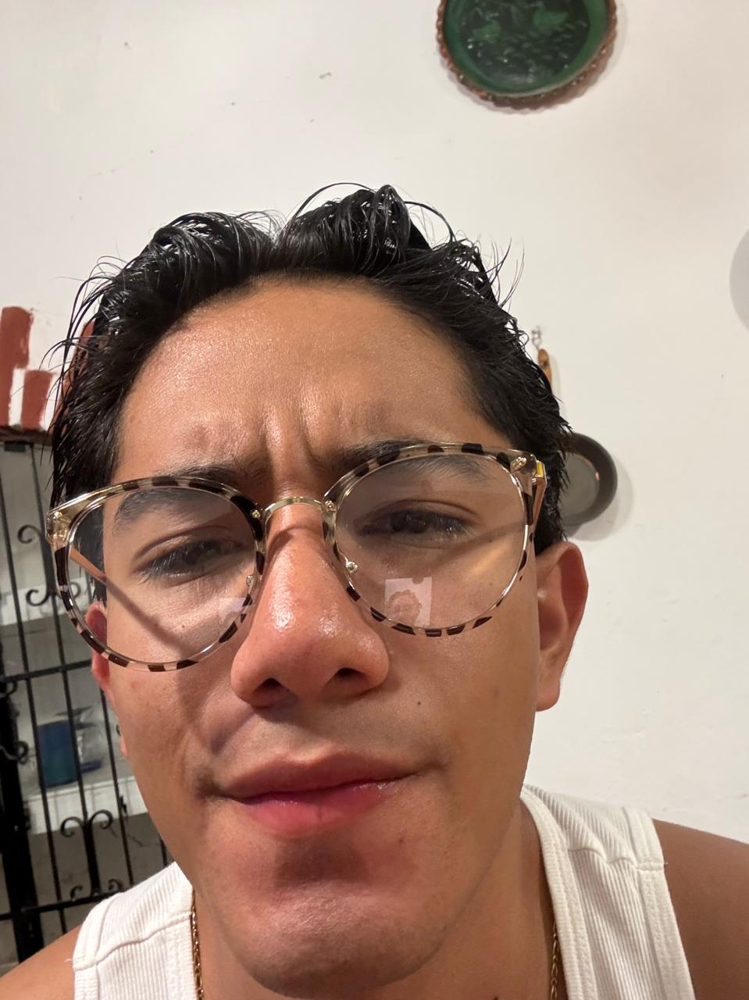

Secundaria
Colegio Victoria Tepeyac
Cursé mis 3 años de secundaria en esta escuela, ubicada en Lindavista. 2016-2019
Bienvenido
Grupo 7CV3

Soy Bernabé, me gusta que me digan Berna, este es mi penúltimo semestre de la carrera, tengo 21 años, dedico mi tiempo a hacer gym, estoy escuchando música la mayoría del tiempo, intento llevar una vida saludable pero divertida al mismo tiempo, nunca me quedo con el "¿Qué hubiera pasado?".
Cursé mis 3 años de secundaria en esta escuela, ubicada en Lindavista. 2016-2019
Estudié y salí como técnico en construcción, en Santo Tomás. 2019-2022
Carrera de Ingeniería en Sistemas Computacionales, actualmente cursando el 9no semestre, 2022-2026
Intento llevar una vida saludable haciendo ejercicio y comiendo bien.
Desde pequeño he jugado soccer, me apasiona el deporte y lo que conlleva.
Me gusta salir de mi zona de confort aunque sea complicado, lo disfruto, es crecer personalmente.
Tres datos curiosos sobre criptografía que considero interesantes.
Alemania propuso a México aliarse contra EE. UU. a cambio de apoyar la recuperación de Texas, Nuevo México y Arizona. Los británicos interceptaron y descifraron el mensaje, ayudando a provocar la entrada de EE. UU. en la Primera Guerra Mundial.
Julio César utilizaba un sistema que desplazaba las letras del alfabeto para ocultar mensajes. Es uno de los cifrados de sustitución más antiguos y conocidos.
El Enigma fue una máquina de cifrado utilizada por Alemania durante la Segunda Guerra Mundial. Su descifrado fue un logro crucial para su caída.
Correo electrónico: josebernabegarciatrejo@gmail.com
Instagram: @bernabe_jgt
GitHub: @BernabeGarcia11
LinkedIn: Mi perfil de LinkedIn